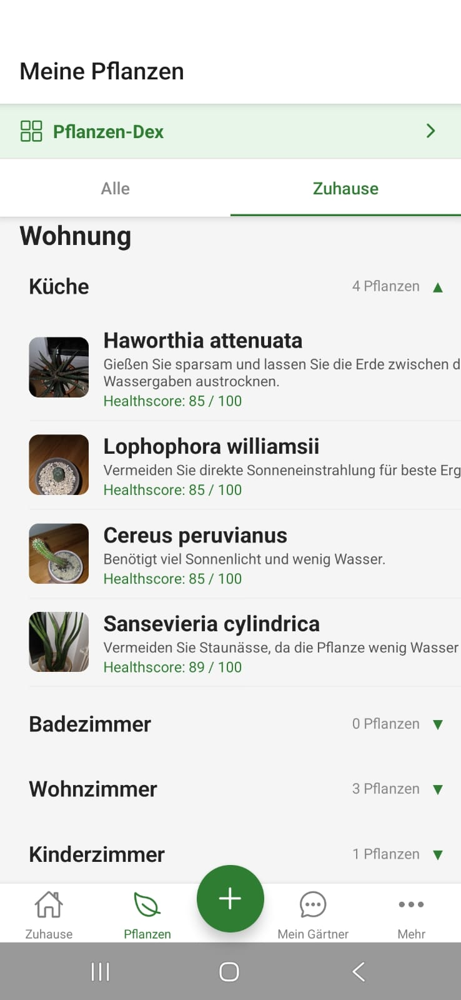
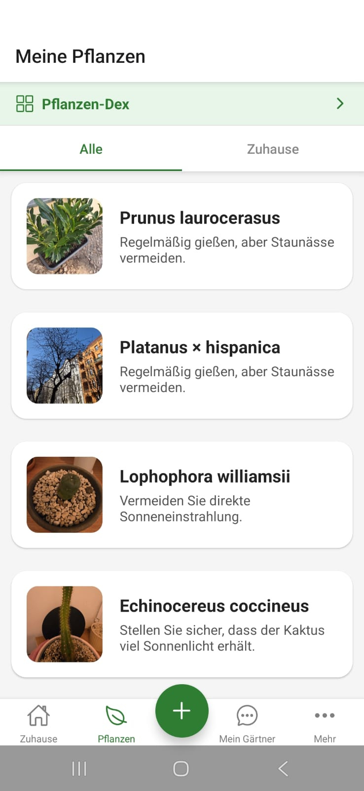
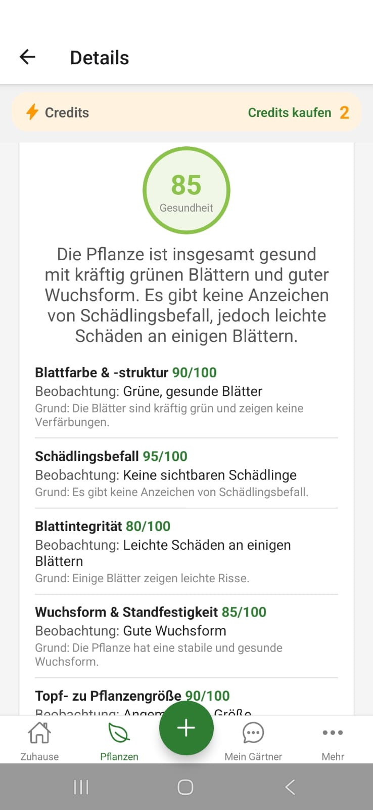
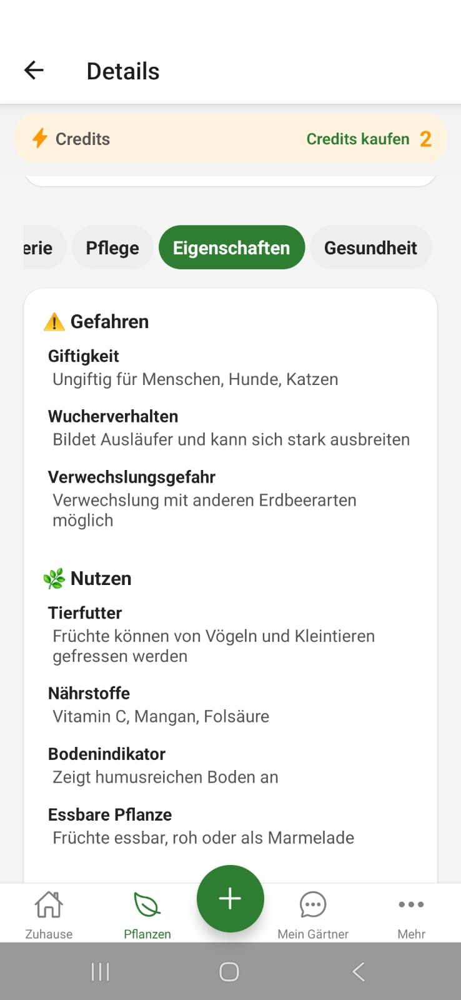
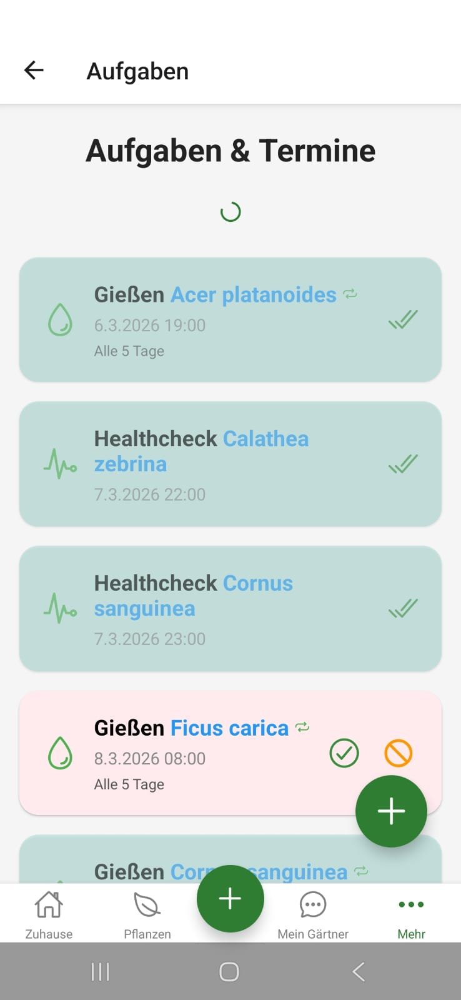
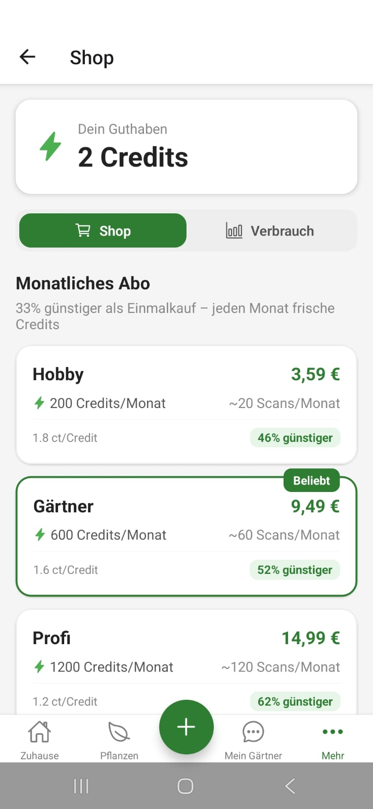
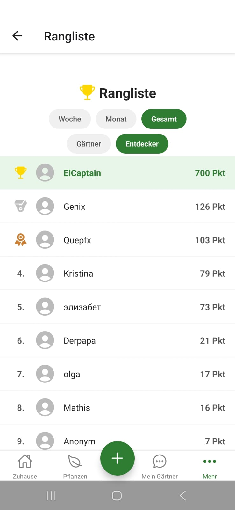

Verwalte Pflanzen dort, wo sie wirklich stehen.
Wohnungen, Zimmer und Zonen sind Teil des Produkts. So werden Pflegehinweise und Aufgaben in deinem Alltag verankert.
FloraScout verbindet Sammlung, Pflegeplanung, Healthchecks und Chat in einem System fuer Wohnung, Balkon und Garten. Statt zehn loser Tools bekommst du eine klare Routine fuer alles, was nach dem Erkennen wirklich zaehlt.
Alle Screens auf dieser Seite stammen direkt aus FloraScout.
Wohnungen, Zimmer und Zonen sind Teil des Produkts. So werden Pflegehinweise und Aufgaben in deinem Alltag verankert.
Der Dex macht Arten, Erstentdeckungen und deine Sammlung sichtbar und gibt dem Lernen eine konkrete Form.
Chat, Healthcheck und Aufgaben greifen ineinander. Aus Beobachtungen werden naechste Schritte, nicht nur Text.
FloraScout ist am staerksten, wenn die Screens zusammenarbeiten: Zuhause ordnet den Bestand, der Dex gibt Kontext, Details erklaeren, Aufgaben machen die Pflege verlaesslich und Ben schliesst die Luecke zwischen Frage und Handlung.
Nicht jede Pflanze lebt im gleichen Kontext. FloraScout bildet Raeume und Unterbereiche direkt ab, damit Bestand, Standort und Aufgaben dieselbe Sprache sprechen.
Zonen geben dem Bestand einen physischen Ort und machen Pflegeentscheidungen greifbar.
Neue Zuhause, Zimmer und Unterzonen lassen sich ohne Admin-Gefuehl anlegen.

Arten, Fortschritt und Erstentdeckungen sind sichtbar. Gleichzeitig bleibt die App nah am Alltag: Listen, lokale Namen und Pflegekarten halten Wissen direkt am Objekt.
Der Dex zeigt Fortschritt, motiviert zur Entdeckung und schafft Wiederkehrroutine.
Botanische Namen, Eigenschaften und Pflege leben nicht in einem separaten Wiki.

FloraScout liefert nicht nur Scores. Der Gesundheitscheck begruendet seine Einschaetzung, die Detailansicht bringt Risiken und Nutzen auf den Punkt und Ben ueberfuehrt das Ganze in konkrete Pflegeaufgaben.
Beobachtungen und Ursachen sind sichtbar statt hinter einer Zahl versteckt.
Ben hilft nicht nur beim Antworten, sondern beim Einrichten echter Routinen.


Aufgaben, Credits und Rangliste sind keine Nebenfeatures. Sie sorgen dafuer, dass Nutzung wiederkommt, Fortschritt fassbar bleibt und die App auch nach dem ersten Scan einen Grund hat zu bleiben.

Giessen, Healthchecks und andere Routinen bekommen einen festen Platz im Kalender des Produkts.

Scan, Chat und Healthcheck haben eine sichtbare Kostenlogik statt einer undurchsichtigen Blackbox.

Wettbewerb schafft Rueckkehranreize fuer Menschen, die an Fortschritt und Vollstaendigkeit Freude haben.
Keine Renderings, keine Platzhalter. Diese Ansichten zeigen, wie FloraScout heute als Produkt aussieht: von Zuhause ueber Dex und Details bis zu Aufgaben, Shop und Rangliste.
Pflanzen, Raeume und Zonen bilden den Rahmen fuer spaetere Pflegeentscheidungen.
Die Sammlung bleibt lesbar, ohne sich in einer reinen Bildergalerie zu verlieren.
Der Dex macht Lernen und Wiederkommen zum Kern des Produkts.
Die Zahl steht nicht allein, sondern wird nachvollziehbar aufgeschluesselt.
Die Wissensebene bleibt Teil derselben App, nicht eines ausgelagerten Lexikons.
Der Chat fuehrt direkt von der Frage zur naechsten sinnvollen Aktion.
So wird Pflege ortsbezogen und damit einfacher planbar.
Regelmaessige Jobs und Status helfen, gute Pflanzenpflege tatsaechlich durchzuziehen.
Monetarisierung bleibt sichtbar und klar statt im Hintergrund versteckt.
Gamification ist hier kein Beiwerk, sondern ein echter Rueckkehrmechanismus.
Wenn du eine Pflanzen-App willst, die nicht beim Erkennen stehen bleibt, sondern dir Ordnung, Kontext und naechste Schritte gibt, ist das der richtige Einstieg.